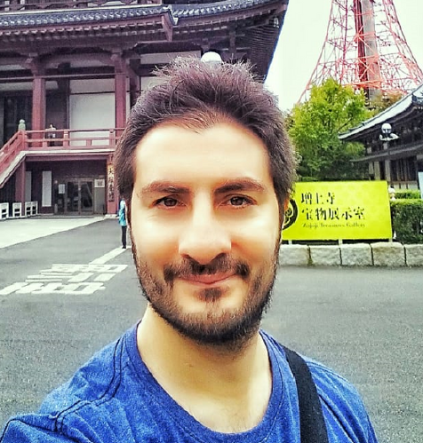

<div class="container-fluid">


  <div class="row">
    <div class="col-lg-3 text-center">
      
      <h1>Groia Leonardo Damián</h1>
      <h2>Full Stack Developer Jr</h2>
    </div>
    <div class="col-lg-9 text-center">
      <h1 class="">Acerca de mi</h1>
      <p>Soy Ingeniero Electrónico con gran pasión por la programación y la implementación tecnológica. Soy docente de la Universidad Nacional de Rosario en materias de Ciencias Básicas: Física y Electrónica.
      <p>Profesionalmente poseo 10 años de experiencia en automatización de procesos industrales llegando a liderar el Departamento de Automatizacion e Inovación Tecnológica.</p>
      <p>Hace 2 años comencé a capacitarme en Desarrollo Web Full Stack y he realizado algunos proyectos de manera Freelance para algunas empresas con HTML, CSS, Bootstap y JS.</p>
      <p>En este momento me encuentro desarrolando proyectos con Angular, Java y MySQL, como así tambien con C# y ASP.NET</p>
      <p>Mi intención es poder dedicarme Full Time al desarrollo Web</p>
    </div>

  </div>

</div>
